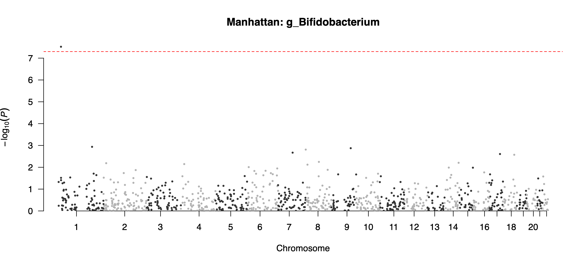
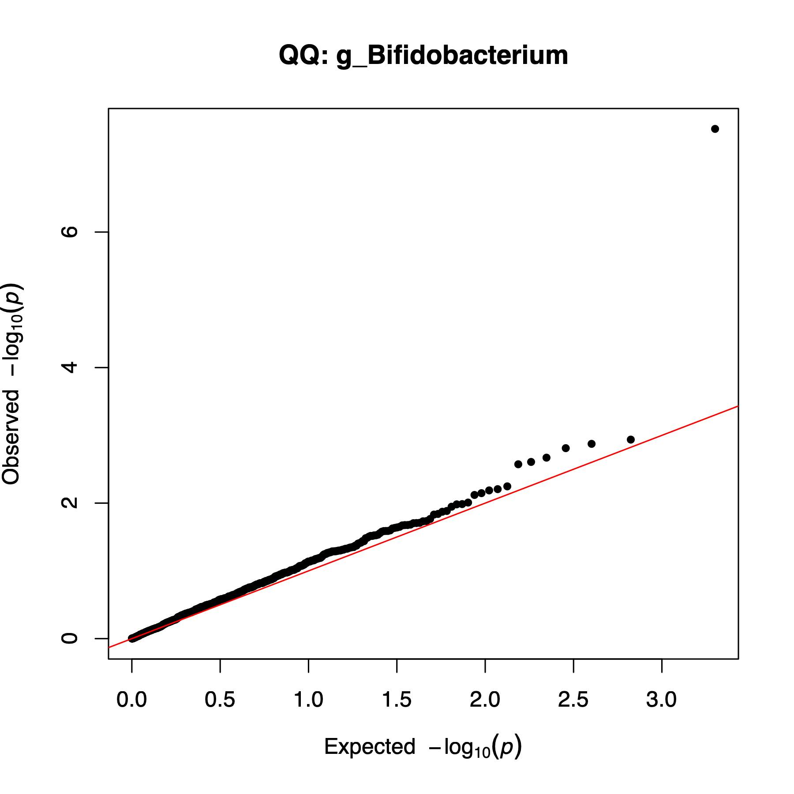
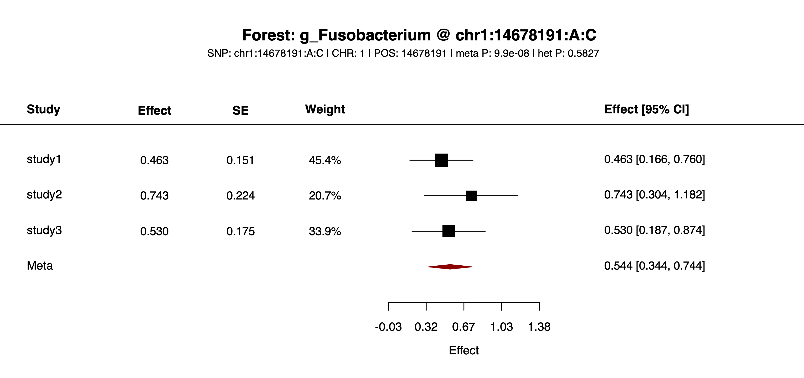
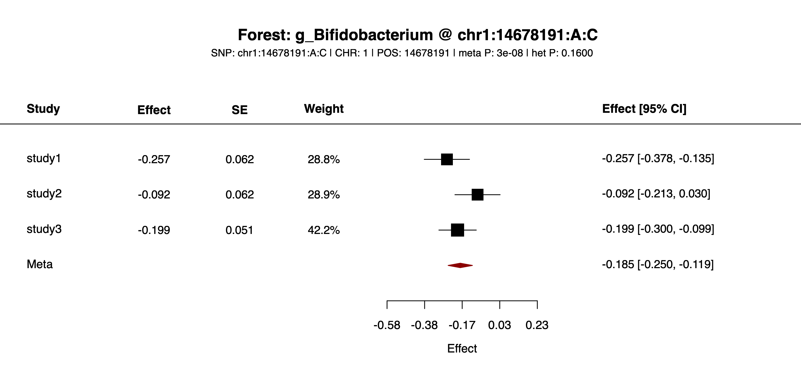

PALM-mGWAS Usage Guide
This page explains how to run the PALM-mGWAS R package: key functions, required inputs, outputs, and the Step0-Step4 workflow.
Environment & Dependencies
Set up the runtime environment before installing or running any PALM-mGWAS command. The package depends on compiled R libraries, so the most reliable workflow is to keep R, PALM, and all supporting packages inside one isolated environment instead of mixing system-level and project-level installs.
Use the repository's
pixi environment for local source runs. It keeps the R version, BLAS/LAPACK libraries, and package installation path aligned with the scripts in this guide.
Use the published Docker image if you want a prebuilt runtime with PALM-mGWAS, PALM,
abess, and the R package dependencies already installed.
Do not install
PALM into a different R library and then run PALM-mGWAS from another environment. Mixed BLAS or mixed R libraries are the main source of setup failures.
- R version: use
R >= 4.2. The bundled pixi setup already pins a compatible runtime. - Core R packages:
PALM,Matrix,data.table,dplyr,ggplot2,metafor,qqman,snpStats,stringr,tibble,optparse, andabess. - System consistency: install PALM and PALM-mGWAS into the same library tree that will be used at runtime.
- If you do not use pixi or Docker: you can run from local R source, but you must create a clean R environment yourself and install all required packages into the same R library before running the CLI.
In practice, you should choose exactly one execution mode for a project directory: local pixi run ... commands, local system-R commands, or Docker/Apptainer commands. The workflow examples below show pixi and Docker commands because those are the most reproducible modes.
Installation
Option A: pixi source installation
Use this method if you want to run the workflow directly from the source tree with the pixi-managed R environment.
# install pixi (if not yet)
curl -fsSL https://pixi.sh/install.sh | bash
# if needed, add pixi to PATH for the current shell
export PATH="$HOME/.pixi/bin:$PATH"
# clone the repository and enter the source tree
git clone git@github.com:CheeseLee888/PALM-mGWAS.git
cd PALM-mGWAS
# create the base pixi environment
pixi install
# install extra R dependencies into the pixi environment
pixi run install-abess
pixi run env PKG_LIBS="-L$PWD/.pixi/envs/default/lib -lopenblas -llapack -lblas" \
R CMD INSTALL thirdParty/PALM_0.1.0.tar.gz
# install PALM-mGWAS itself into the same pixi R library
pixi run R CMD INSTALL .One-time setup: pixi install only creates the base environment. Before running the workflow scripts, you should also install abess, the bundled PALM tarball, and the local PALMmGWAS package into that pixi-managed R library.
Command prefix for routine runs: after the one-time setup above, most commands in this guide can be run as pixi run Rscript extdata/<script>.R ... from the repository root.
Do not use the system R for PALM installation: install PALM through pixi run so that it links against the BLAS/LAPACK libraries inside the pixi environment. On macOS, avoid wrapping the install command in pixi run bash -lc '...' because a login shell can resolve R back to the system binary and trigger errors such as missing libopenblas.0.dylib when library(PALM) is loaded.
Option B: local R source installation without pixi
Use this method only if you want to manage R and compiled libraries yourself. Compared with pixi, this mode requires manual package installation and manual control of BLAS/LAPACK compatibility. Install PALM, PALMmGWAS, and all dependencies into the same R library that will be used when running Rscript.
# clone the repository and enter the source tree
git clone git@github.com:CheeseLee888/PALM-mGWAS.git
cd PALM-mGWAS
# install CRAN dependencies into your active R library
Rscript -e 'install.packages(c("Matrix", "data.table", "dplyr", "ggplot2", "metafor", "qqman", "stringr", "tibble", "optparse", "abess"), repos="https://cloud.r-project.org")'
# install Bioconductor dependency snpStats
Rscript -e 'if (!requireNamespace("BiocManager", quietly=TRUE)) install.packages("BiocManager", repos="https://cloud.r-project.org"); BiocManager::install("snpStats", update=FALSE, ask=FALSE)'
# install the bundled PALM source package
R CMD INSTALL thirdParty/PALM_0.1.0.tar.gz
# install PALM-mGWAS itself
R CMD INSTALL .
# smoke test that all packages load from the same R library
Rscript -e 'library(PALM); library(PALMmGWAS); library(snpStats); cat("PALM-mGWAS local R installation OK\n")'Command prefix for routine runs: with local R source installation, replace the pixi prefix with plain Rscript, for example Rscript extdata/step0_checkInput.R ... from the repository root.
When to prefer pixi: if PALM fails to install or load because of BLAS/LAPACK linking errors, use Option A. Pixi pins the compiler-facing libraries and installs PALM with explicit link flags, which avoids most local system-R library mismatches.
Option C: Docker image
# pull the published image
docker pull --platform=linux/amd64 cheeselee/palm-mgwas:latest
# enter the repository example directory
cd /path/to/PALM-mGWAS
# run a packaged script inside the container
docker run --rm --platform=linux/amd64 \
-v "$PWD":/work -w /work \
cheeselee/palm-mgwas:latest \
step1_null.R --helpThis published Docker image already contains pixi, abess, PALM, PALMmGWAS, and the R package dependencies, so Docker users do not need to repeat the local source installation steps from Option A or Option B. Mount your local project directory to /work and pass paths under /work, such as /work/example/input/study1/abd.txt. The Docker image supplies the scripts and runtime; the data files are read from and written to your mounted local directory.
Option D: Build an Apptainer/SIF image for HPC
Use this method when the target cluster runs Apptainer/Singularity instead of Docker. First build or pull the Docker image on a machine with Docker, save it as a Docker archive, then convert the archive to PALMmGWAS.sif.
# Option D1: build the Docker image locally from this repository
DOCKER_DEFAULT_PLATFORM=linux/amd64 \
docker buildx build --platform linux/amd64 \
-t palm-mgwas:latest --load \
-f docker/Dockerfile .
# Option D2: or use the published Docker image
docker pull --platform=linux/amd64 cheeselee/palm-mgwas:latest
# save one of the Docker images as an archive
docker save cheeselee/palm-mgwas:latest -o PALMmGWAS.tar
# or, if you built the local image above:
docker save palm-mgwas:latest -o PALMmGWAS.tar
# convert the Docker archive to an Apptainer/SIF image
docker run --rm -it --privileged \
--platform=linux/amd64 \
-v "$PWD":/work ghcr.io/apptainer/apptainer:latest \
apptainer build --arch amd64 \
/work/PALMmGWAS.sif \
docker-archive:///work/PALMmGWAS.tarCopy PALMmGWAS.sif to the cluster project directory and run workflow scripts with apptainer exec. The simulation workflow under simulation/ uses this SIF image when submitting the provided .sbatch scripts. Those templates expect the default image path ${WORK}/PALMmGWAS.sif, or you can override it by setting SIF=/path/to/PALMmGWAS.sif.
Workflow
Run the packaged CLI directly after completing the one-time installation steps above; you do not need to call exported R functions manually. Before using the relative paths shown below, first cd into the PALM-mGWAS package root. The workflow below goes from Step0 to Step4. Pixi commands use local project-relative paths. Docker commands mount the same local project at /work, so their input and output arguments use /work/... paths.
In the parameter tables below, parameter names shown in bold are required.
step0_checkInput.R optionally filters low-depth samples, checks IID consistency across abundance, covariates, and genotype input, reorders tables to match genotype sample order, and can write sequencing-depth summaries.step1_null.R fits the PALM null model from the Step0-aligned abundance and covariate tables and can write feature summaries.step2_1_summary.R reads genotype input, runs PALM score tests without compositional correction, writes one association file per feature, and can write genotype/SNP summaries.step2_2_correction.R reads one Step2 scope at a time and applies median- or tune-based compositional correction across features for each SNP.step3_meta.R meta-analyzes multiple studies and adds meta_* columns.step4_reporting.R generates Manhattan and forest plots.Step0: Check and Align Input IDs
pixi run --manifest-path=pixi.toml Rscript extdata/step0_checkInput.R \
--abdFile=${abdFile} \
--covFile=${covFile} \
--abdAlignedFile=${abdAlignedFile} \
--covAlignedFile=${covAlignedFile} \
--covarColList=${covarColList} \
--depthCol=${depthCol} \
--depth.filter=${depth_filter} \
--genoFile=${genoFile} \
--SeqDepthInfoFile=${SeqDepthInfoFile}docker run --rm --platform=linux/amd64 \
-v "$PWD":/work -w /work \
cheeselee/palm-mgwas:latest \
step0_checkInput.R \
--abdFile=${abdFile} \
--covFile=${covFile} \
--abdAlignedFile=${abdAlignedFile} \
--covAlignedFile=${covAlignedFile} \
--covarColList=${covarColList} \
--depthCol=${depthCol} \
--depth.filter=${depth_filter} \
--genoFile=${genoFile} \
--SeqDepthInfoFile=${SeqDepthInfoFile}- Purpose: optionally filter low-depth samples, then verify that abundance, covariates, and genotype input remain aligned before modeling.
- Alignment rule: the step keeps samples matched across
abdFile,covFile, and genotype input, then writes aligned abundance and covariate tables in genotype sample order. - Covariate columns:
--covarColListis used only to decide which covariate columns must be non-missing for sample filtering before Step1. It does not subset columns in the aligned covariate output;covAlignedFilekeeps all columns fromcovFile. - Genotype sample count: genotype input may contain extra samples, but it must not miss any sample retained from
abdFile/covFileafter filtering. - Failure cases: duplicated IDs, missing values, or non-identical IID sets.
| Name | Type | Default | Meaning |
|---|---|---|---|
--abdFile | character | "" | Abundance table whose sample order will be checked/reordered |
--covFile | character | "" | Covariate table whose sample order will be checked/reordered |
--abdAlignedFile | character | "" | Output path for the filtered/aligned abundance table; original input is not overwritten |
--covAlignedFile | character | "" | Output path for the filtered/aligned covariate table; original input is not overwritten |
--genoFile | character | "" | Genotype input used as the sample-order reference. Accepted values are a PLINK prefix without extension, or a file ending in .vcf, .vcf.gz, or .vcf.bgz. For VCF, Step0 reads sample IDs from the sample columns in the #CHROM header line, checks that every retained abundance/covariate IID is present, ignores extra VCF-only samples, and reorders the aligned abundance/covariate outputs to that VCF sample-column order |
--covarColList | character | "NULL" | Optional comma-separated covariate columns required by Step1. Step0 uses these columns only for missingness-based sample filtering before ID matching. It does not remove other columns from covAlignedFile. If omitted or set to NULL, all non-ID columns in covFile are checked for missingness |
--depthCol | character | "NULL" | Optional covariate column used as sequencing depth during Step0 sample filtering; if omitted, depth is computed from row sums of abdFile |
--depth.filter | double | 0 | Sample-level depth threshold applied before genotype ID matching; samples with depth <= this value are removed |
--SeqDepthInfoFile | character | "NULL" | Optional output file for DepthInfo, using the exact depth values Step0 uses for sample filtering. If depthCol is supplied, values come from that covariate column; otherwise they come from row sums of abdFile |
Step0 examples:
--abdFile=example/input/study1/abd.txt--covFile=example/input/study1/cov.txt--abdAlignedFile=example/output/study1/abd_aligned.txt--covAlignedFile=example/output/study1/cov_aligned.txt--genoFile=example/input/study1/geno;--genoFile=example/input/study1_vcf/geno.vcf.gz--covarColList=NULLchecks all covariate columns for missingness;--covarColList=AGE,SEX,PC01checks only those columns. In both cases,covAlignedFilestill keeps all original covariate columns.--depthCol=SeqDepth;--depthCol=NULL--depth.filter=0;--depth.filter=1000--SeqDepthInfoFile=example/output/study1/info_seqdepth.txt;--SeqDepthInfoFile=NULL
Step1: Fit Null Model
pixi run --manifest-path=pixi.toml Rscript extdata/step1_null.R \
--abdFile=${abdFile} \
--covFile=${covFile} \
--covarColList=${covarColList} \
--depthCol=${depthCol} \
--prev.filter=${prev_filter} \
--FeatureInfoFile=${FeatureInfoFile} \
--FeatureNameListFile=${FeatureNameListFile} \
--NULLObjPrefix=${NULLObjPrefix}docker run --rm --platform=linux/amd64 \
-v "$PWD":/work -w /work \
cheeselee/palm-mgwas:latest \
step1_null.R \
--abdFile=${abdFile} \
--covFile=${covFile} \
--covarColList=${covarColList} \
--depthCol=${depthCol} \
--prev.filter=${prev_filter} \
--FeatureInfoFile=${FeatureInfoFile} \
--FeatureNameListFile=${FeatureNameListFile} \
--NULLObjPrefix=${NULLObjPrefix}- Inputs: the Step0-aligned abundance table plus the aligned covariate table.
- Outputs:
NULLObjPrefixcontainingmodglmm; directories are created if missing. - Tips: ensure no duplicated sample IDs; use abundance(count); keep sessionInfo for reproducibility.
| Name | Type | Default | Meaning |
|---|---|---|---|
--abdFile | character | "" | Aligned abundance table used to fit the null model |
--NULLObjPrefix | character | "" | Output prefix for the fitted PALM null model, not a complete filename. Step1 writes ${NULLObjPrefix}.rda; if .rda is supplied accidentally, it is normalized back to the prefix |
--covFile | character | "" (normalized to NULL) | Optional aligned covariate file; the CLI also accepts empty string or NULL to omit covariates |
--covarColList | character | "" (normalized to NULL) | Optional comma-separated covariate column names to keep from covFile; names must match the header exactly. If omitted or set to NULL while covFile is provided, Step1 uses all covariate columns in covFile. If covFile=NULL, Step1 fits the null model without covariates |
--depthCol | character | "" (normalized to NULL) | Optional column name in covFile used as PALM depth; if omitted, PALM uses row sums of abdFile |
--prev.filter | double | 0.1 | Feature prevalence threshold forwarded to PALM::palm.null.model() |
--FeatureInfoFile | character | "NULL" | Optional output file for FeatureInfo, computed from the Step1 input abundance table before prev.filter removes low-prevalence features |
--FeatureNameListFile | character | "NULL" | Optional output file for modeled feature IDs retained after prevalence filtering |
Step1 examples:
--abdFile=example/output/study1/abd_aligned.txt--NULLObjPrefix=example/output/study1/step1_allphenowritesexample/output/study1/step1_allpheno.rda--covFile=example/output/study1/cov_aligned.txt;--covFile=NULL--covarColList=NULLuses all covariate columns fromcovFile; use--covarColList=AGE,SEX,PC01only when selecting specific covariates--depthCol=SeqDepth;--depthCol=NULL--prev.filter=0.1;--prev.filter=0--FeatureInfoFile=example/output/study1/info_feature.txt;--FeatureInfoFile=NULL--FeatureNameListFile=example/output/study1/feature_list.txt;--FeatureNameListFile=NULL
Step2: Per-study Summary
Step2.1: null model + genotype to per-feature association files
pixi run --manifest-path=pixi.toml Rscript extdata/step2_1_summary.R \
--genoFile=${genoFile} \
--NULLObjPrefix=${NULLObjPrefix} \
--SummaryPrefix=${SummaryPrefix} \
--chrom=${chrom} \
--featureColList=${featureColList} \
--minMAF=${minMAF} \
--minMAC=${minMAC} \
--SnpInfoFile=${SnpInfoFile} \
--useCluster=${useCluster} \
--clusterFile=${clusterFile}docker run --rm --platform=linux/amd64 \
-v "$PWD":/work -w /work \
cheeselee/palm-mgwas:latest \
step2_1_summary.R \
--genoFile=${genoFile} \
--NULLObjPrefix=${NULLObjPrefix} \
--SummaryPrefix=${SummaryPrefix} \
--chrom=${chrom} \
--featureColList=${featureColList} \
--minMAF=${minMAF} \
--minMAC=${minMAC} \
--SnpInfoFile=${SnpInfoFile} \
--useCluster=${useCluster} \
--clusterFile=${clusterFile}- Inputs: genotype input plus null model
.rda. - Outputs: generates many per-feature
.txtfiles, one file for each tested feature, with columnsSNP, CHR, POS, est, stderr, pval. - SNP format: dots are replaced by colons, e.g.,
chr1:12345:REF:ALT. - Parallelization pattern: the software exposes
--chromand--featureColListso users can decompose Step2.1 into independent jobs. In other words,chrom x featureparallelism is achieved by scheduler-level job submission, not by internal multithreading within one Step2.1 process.
| Name | Type | Default | Meaning |
|---|---|---|---|
--genoFile | character | "" | Genotype input for association testing: PLINK prefix or VCF. VCF input is read directly; Step2.1 auto-detects DS or GT from the FORMAT field and prefers DS when present |
--NULLObjPrefix | character | "" | Null model prefix generated by Step1; Step2.1 reads ${NULLObjPrefix}.rda |
--SummaryPrefix | character | "" | Base Step2 summary prefix, not a complete output filename. Step2.1 removes any trailing _, appends _chr<chrom> or _allchr, then appends _<feature>.txt |
--chrom | character | "" | Optional chromosome subset; use --chrom=1 to restrict to one chromosome, or leave empty/use NULL to keep all chromosomes |
--featureColList | character | "NULL" (normalized to NULL) | Optional comma-separated feature IDs to test from the Step1 null model; NULL keeps all modeled features |
--minMAF | double | 0.05 | Optional minimum minor allele frequency threshold for SNP filtering; 0 disables this filter |
--minMAC | integer | 5 | Optional minimum minor allele count threshold for SNP filtering; 0 disables this filter |
--SnpInfoFile | character | "NULL" | Optional output file for genotype/SNP summary. SNPInfo is computed from the Step2.1 genotype matrix after NULL-model sample alignment and optional chromosome filtering, but before minMAF/minMAC remove SNPs |
--useCluster | logical | FALSE | Whether to use clustering in Step2.1. If no --clusterFile is provided, native PLINK input falls back to FID from the .fam file; all-zero FIDs still disable clustering |
--clusterFile | character | "NULL" | Optional two-column cluster file. The first column is sample IID and the second column is cluster ID. A header row IID cluster is accepted but not required. Providing this file enables clustering and overrides the PLINK FID fallback |
Step2.1 examples:
--genoFile=example/input/study1/geno;--genoFile=example/input/study1_vcf/geno.vcf.gz--NULLObjPrefix=example/output/study1/step1_allpheno--SummaryPrefix=example/output/study1/step2 --chrom=1writes one file per tested feature, such asexample/output/study1/step2_chr1_g_Bifidobacterium.txtandexample/output/study1/step2_chr1_g_Peptoniphilus_unclassified.txt;--SummaryPrefix=example/output/study1/step2_ --chrom=NULLwrites all-chromosome files such asexample/output/study1/step2_allchr_g_Bifidobacterium.txtandexample/output/study1/step2_allchr_g_Peptoniphilus_unclassified.txt--chrom=1;--chrom=NULL; omit it or set--chrom=for all chromosomes--featureColList=g_Bifidobacterium,g_Peptoniphilus_unclassified;--featureColList=NULL--minMAF=0.05;--minMAF=0--minMAC=5;--minMAC=0--SnpInfoFile=example/output/study1/info_snp.txt;--SnpInfoFile=NULL--useCluster=TRUE;--useCluster=FALSE--clusterFile=example/input/study1/cluster.txt;--clusterFile=NULL. The file must contain two columns:IIDandcluster
Step2.2: compositional correction on one Step2 scope
pixi run --manifest-path=pixi.toml Rscript extdata/step2_2_correction.R \
--inputPrefix=${inputPrefix} \
--chrom=${chrom} \
--overwriteOutput=${overwriteOutput} \
--correct=${step2CorrectMode} \
--NULLmodelFile=${NULLObjPrefix}.rdadocker run --rm --platform=linux/amd64 \
-v "$PWD":/work -w /work \
cheeselee/palm-mgwas:latest \
step2_2_correction.R \
--inputPrefix=${inputPrefix} \
--chrom=${chrom} \
--overwriteOutput=${overwriteOutput} \
--correct=${step2CorrectMode} \
--NULLmodelFile=${NULLObjPrefix}.rda- Why separate: Step2.1 can test multiple features in one run when
--featureColList=NULL, but it still writes one result file per feature. Compositional correction must be applied across all feature result files for each SNP, so Step2.2 is kept as a separate step that runs after the selected scope has all feature files available. That scope can be one chromosome orallchr. - Correction method: Step2.2 supports
medianandtune. Fortune, Step2.2 infers the sample size from--NULLmodelFile. Thetunemode is very slow, so use it only for small runs or when sufficient compute time is available.
| Name | Type | Default | Meaning |
|---|---|---|---|
--inputPrefix | character | "" | Shared Step2 base prefix used to discover all feature files for correction; use the base before _allchr or _chrN. Do not pass step2_allchr or step2_chr1 |
--chrom | character | "NULL" | Correction scope. Use NULL to target step2_allchr_*.txt files, or 1..22 for chromosome-specific files such as step2_chr1_*.txt |
--overwriteOutput | character | "TRUE" | If TRUE, overwrite the selected Step2 scope in place. If FALSE, keep the originals and write corrected copies as <inputPrefix>_corrected_<allchr|chrN>_<feature>.txt |
--correct | character | "median" | Correction method. Use median for median-based correction or tune for PALM tuning-based correction. tune is very slow compared with median |
--NULLmodelFile | character | "NULL" | Optional Step1 NULL model file. When --correct=tune, Step2.2 uses it to infer tuneN = nrow(modglmm[[1]]$Y_I) |
Step2.2 examples:
- If the selected scope contains files such as
example/output/study1/step2_allchr_g_Bifidobacterium.txtandexample/output/study1/step2_allchr_g_Peptoniphilus_unclassified.txt, set--inputPrefix=example/output/study1/step2and--chrom=NULL. Step2.2 reads all matchingstep2_allchr_<feature>.txtfiles and applies correction across those features for each SNP. - If the selected scope contains chromosome-specific files such as
example/output/study1/step2_chr1_g_Bifidobacterium.txtandexample/output/study1/step2_chr1_g_Peptoniphilus_unclassified.txt, use the same--inputPrefix=example/output/study1/step2with--chrom=1. Step2.2 then corrects only thechr1feature files. - With
--overwriteOutput=TRUE, the corrected values replace the selected input files in place, for exampleexample/output/study1/step2_allchr_g_Bifidobacterium.txt. - With
--overwriteOutput=FALSE, the original files are kept and corrected copies are written in the same directory, such asexample/output/study1/step2_corrected_allchr_g_Bifidobacterium.txtorexample/output/study1/step2_corrected_chr1_g_Bifidobacterium.txt.
Step3: Meta Analysis
# studyDirFile lines: studyIDdir (e.g., "study1\texample/output/study1")
pixi run --manifest-path=pixi.toml Rscript extdata/step3_meta.R \
--studyDirFile=${studyDirFile} \
--inputPrefix=${inputPrefix} \
--chrom=${chrom} \
--featureColList=${featureColList} \
--metaPrefix=${metaPrefix} docker run --rm --platform=linux/amd64 \
-v "$PWD":/work -w /work \
cheeselee/palm-mgwas:latest \
step3_meta.R \
--studyDirFile=${studyDirFile} \
--inputPrefix=${inputPrefix} \
--chrom=${chrom} \
--featureColList=${featureColList} \
--metaPrefix=${metaPrefix}- Outputs: one file per feature named
metaPrefix_<allchr|chrN>_<feature>.txt, where the scope and feature parts match the selected Step2 input scope. The output containsmeta_est,meta_stderr,meta_pval, optionalmeta_pval.het, plus per-studystudy*_est/study*_stderr.
| Name | Type | Default | Meaning |
|---|---|---|---|
--studyDirFile | character | "" | Study list file with two columns per line: studyID and Step2 output directory |
--inputPrefix | character | "" | Shared Step2 base prefix used to discover all feature files for meta-analysis; use the base before _allchr or _chrN |
--metaPrefix | character | "" | Full output prefix for meta-analysis tables, including directory and filename prefix, not a complete filename. Step3 removes any trailing _ and writes files as <metaPrefix>_<allchr|chrN>_<feature>.txt |
--chrom | character | "NULL" | Meta-analysis scope. Use NULL to meta-analyze step2_allchr_*.txt files, or run Step3 once per chromosome with 1..22 for chromosome-specific files such as step2_chr1_*.txt |
--featureColList | character | "NULL" | Optional comma-separated feature IDs to meta-analyze; NULL keeps all features in the selected Step2 scope |
Step3 examples:
Example studyDirFile content:
study1 example/output/study1
study2 example/output/study2
study3 example/output/study3- Set
--studyDirFile=example/input/study_dirs.txt. Step3 will search each listed study directory for matching Step2 files. - If each study directory contains all-chromosome files such as
step2_allchr_g_Bifidobacterium.txtandstep2_allchr_g_Peptoniphilus_unclassified.txt, set--inputPrefix=example/output/study1/step2and--chrom=NULL. If each study directory contains chromosome-specific files, run Step3 separately for each chromosome with--chrom=1through--chrom=22. Step3 uses the basenamestep2as the shared prefix and applies it inside every study directory fromstudyDirFile. - If each study directory contains chromosome-specific files such as
step2_chr1_g_Bifidobacterium.txt, use the same--inputPrefix=example/output/study1/step2with--chrom=1. Step3 then meta-analyzes only thechr1scope. - Use
--featureColList=NULLto meta-analyze all discovered features in the selected scope. Use--featureColList=g_Bifidobacteriumto meta-analyze only that feature; missing study-feature files are skipped for that feature. - With
--metaPrefix=example/output/meta/metaand--chrom=NULL, Step3 writes one meta file per feature, such asexample/output/meta/meta_allchr_g_Bifidobacterium.txt. With--chrom=1, it writes files such asexample/output/meta/meta_chr1_g_Bifidobacterium.txt.
Step4: Reporting
# case 1: combined Manhattan across features
pixi run --manifest-path=pixi.toml Rscript extdata/step4_reporting.R \
--metaDir=${metaDir} \
--plotPrefix=${plotPrefix} \
--pCut=${pCut}
# case 2: one feature
pixi run --manifest-path=pixi.toml Rscript extdata/step4_reporting.R \
--metaDir=${metaDir} \
--plotPrefix=${plotPrefix} \
--feature=${feature} \
--plotMinP=${plotMinP:-NA}
# case 3: one SNP across features
pixi run --manifest-path=pixi.toml Rscript extdata/step4_reporting.R \
--metaDir=${metaDir} \
--plotPrefix=${plotPrefix} \
--snp=${snp} \
--pCut=${pCut} \
--showMeta=${showMeta:-TRUE} \
--showHet=${showHet:-TRUE}
# case 4: one feature-SNP pair
pixi run --manifest-path=pixi.toml Rscript extdata/step4_reporting.R \
--metaDir=${metaDir} \
--plotPrefix=${plotPrefix} \
--feature=${feature} \
--snp=${snp} \
--showMeta=${showMeta:-TRUE} \
--showHet=${showHet:-TRUE}# Docker commands access the mounted local project under /work
docker run --rm --platform=linux/amd64 \
-v "$PWD":/work -w /work \
cheeselee/palm-mgwas:latest \
step4_reporting.R \
--metaDir=${metaDir} \
--plotPrefix=${plotPrefix} \
--pCut=${pCut}- Mode selection: the plotting mode is determined by whether
--featureand--snpare specified. Different combinations produce the following plot types. - Case 1: no
--featureand no--snpgives a combined overview in which each SNP is represented by the feature with the smallest p-value for that SNP. - Case 2:
--featureonly gives a feature-specific Manhattan plot and QQ plot. - Case 3:
--snponly writes one forest plot per feature that contains the requested SNP and passes the--pCutfilter, meaning the SNP p-value for that feature is small enough. Set--pCut=NA,NULL, or empty to keep all features containing the SNP. Each figure now includes study-level columns such as effect, standard error, weight, and effect with 95% confidence interval. - Case 4: both
--featureand--snpgive a forest plot for one feature-SNP pair across studies. - Single-study Step4: you can run Step4 directly after Step2 by pointing
metaDirto one study's Step2 output folder; in that case the plots summarize a single study rather than a meta-analysis.
| Name | Type | Default | Meaning |
|---|---|---|---|
--metaDir | character | "" | Directory containing Step3 meta files or single-study Step2 files. Step4 auto-discovers files ending in _allchr_<feature>.txt or _chrN_<feature>.txt. If any chromosome-specific files exist for a feature, Step4 reads those files in chromosome order and ignores the matching allchr file; otherwise it reads the single allchr file. Files that do not match this naming convention are ignored unless no valid result files are found |
--plotPrefix | character | "" | Full output prefix for plots, including directory and optional filename prefix. Use a trailing slash to keep the default plot names inside a directory, for example example/output/plot/; use a basename to prefix outputs, for example example/output/plot/step4 writes step4_combined_hits.png |
--feature | character | NA | (Microbial) feature name. Used only in case 2 (--feature without --snp) and case 4 (--feature with --snp) |
--snp | character | NA | SNP identifier. Used only in case 3 (--snp without --feature) and case 4 (--feature with --snp) |
--pCut | character (parsed as numeric or NA) | "5e-8" | P-value cutoff accepted only in case 1 and case 3. In case 1, it controls printed/reported best SNP-feature hits; in case 3, it keeps only features where the requested SNP has a small enough p-value. NA, NULL, or empty disables this filter |
--showMeta | logical | TRUE | Used only in SNP-based forest plots, case 3 and case 4. If TRUE, overlay meta estimates when available |
--showHet | logical | TRUE | Used only in SNP-based forest plots, case 3 and case 4. If TRUE, emphasize heterogeneity information when available |
--plotMinP | character (parsed as numeric or NA) | NA | Used only in Manhattan plots, case 1 and case 2. Points with P < plotMinP are plotted slightly above -log10(plotMinP) in red instead of stretching the full y-axis. Use NA to disable compression |
--width | character (parsed as numeric or NA) | NA | Plot width in inches; NA lets the script auto-size |
--height | character (parsed as numeric or NA) | NA | Plot height in inches; NA lets the script auto-size |
Step4 examples:
--metaDir=example/output/meta--plotPrefix=example/output/plot/;--plotPrefix=example/output/plot/step4--feature=g_Peptoniphilus_unclassified; omit it for case 1 or case 3--snp=chr1:14678191:A:C; omit it for case 1 or case 2--pCut=1e-8;--pCut=NA;--pCut=NULL;--pCut=--showMeta=TRUE;--showMeta=FALSE--showHet=TRUE;--showHet=FALSE--plotMinP=1e-10;--plotMinP=1e-12;--plotMinP=NA--width=10;--width=NA--height=6;--height=NA
Example Data in This Repo
The repository already contains a small three-study example under example/input/ and matching outputs under example/output/. These files are useful for understanding the expected formats before running your own data.
Example Input: abundance
# file: example/input/study1/abd.txt
IID g_Bifidobacterium g_Lactobacillus g_Hungatella g_Sutterella g_Anaerostipes g_Peptoniphilus_unclassified g_Fusobacterium g_Terrisporobacter g_Rothia f_Atopobiaceae
ID_001 178 81 59 0 74 32 0 49 0 0
ID_002 0 43 0 73 96 0 0 0 0 82
ID_003 235 81 0 92 110 81 54 0 63 0
ID_004 152 0 0 0 75 91 0 0 0 0The first column is sample ID (IID), and each remaining column is a microbial feature. The actual study1 example contains many genus-, family-, and order-level features, so the table above is intentionally truncated after the first few feature columns.
Example Input: covariates
# file: example/input/study1/cov.txt
IID AGE SEX PC01 PC02 PC03 PC04 PC05
ID_001 0.199426813268783 0 -0.0109014 0.0462363 -0.0272948 -0.00748014 0.00470315
ID_002 -0.829764647357603 0 0.00637629 -0.00200517 -0.00108298 0.00540607 0.000137391
ID_003 -1.03560293948288 0 0.0103864 -0.00676172 0.000785164 -0.00612183 0.00100164
ID_004 -0.848477219368992 1 0.0108307 -0.00694051 -0.000638697 -0.0077418 0.00113121The first column must still be the sample ID. Remaining columns can be numeric or factor-like covariates used in the null model.
Example Input: study list for meta-analysis
# file: example/input/study_dirs.txt
study1 example/output/study1
study2 example/output/study2
study3 example/output/study3This file lists the studies included in the example meta-analysis and the location of each study's result directory. Each line maps one study ID to one local project-relative folder; whitespace separation is accepted by the current CLI.
# file: example/input/study_dirs_docker.txt
study1 /work/example/output/study1
study2 /work/example/output/study2
study3 /work/example/output/study3Use study_dirs_docker.txt for Docker runs because the container sees the mounted local project under /work.
Example Input: genotype
The primary genotype input for each study is stored as a PLINK dataset with prefix example/input/study1/geno, corresponding to the files geno.bed, geno.bim, and geno.fam. The repository also includes an alternative input example under example/input/study1_vcf/ for testing Step2 with VCF input.
Example Workflow: from input to output
The same example data can be read as a concrete workflow: what goes in, which script is called, which parameters matter, and what files come out.
Step0: align IDs before modeling
Input: example/input/study1/abd.txt, example/input/study1/cov.txt, and genotype input passed through --genoFile.
# Step0 filters low-depth samples if requested, then checks IID sets and reorders abd/cov if needed
pixi run --manifest-path=pixi.toml Rscript extdata/step0_checkInput.R \
--abdFile=example/input/study1/abd.txt \
--covFile=example/input/study1/cov.txt \
--abdAlignedFile=example/input/study1/abd_aligned.txt \
--covAlignedFile=example/input/study1/cov_aligned.txt \
--covarColList=NULL \
--depthCol=NULL \
--depth.filter=0 \
--genoFile=example/input/study1/geno \
--SeqDepthInfoFile=NULLdocker run --rm --platform=linux/amd64 \
-v "$PWD":/work -w /work \
cheeselee/palm-mgwas:latest \
step0_checkInput.R \
--abdFile=/work/example/input/study1/abd.txt \
--covFile=/work/example/input/study1/cov.txt \
--abdAlignedFile=/work/example/input/study1/abd_aligned.txt \
--covAlignedFile=/work/example/input/study1/cov_aligned.txt \
--covarColList=NULL \
--depthCol=NULL \
--depth.filter=0 \
--genoFile=/work/example/input/study1/geno \
--SeqDepthInfoFile=NULLOutput: Step0 writes aligned files such as example/input/study1/abd_aligned.txt and example/input/study1/cov_aligned.txt. The original input files are not overwritten.
Example Output: Step0 sequencing depth summary
# file: example/output/study1/info_seqdepth.txt
SampleID SeqDepth
ID_001 473
ID_002 294
ID_003 716
ID_004 318This optional table is written by Step0 when --SeqDepthInfoFile is set. With --depthCol=NULL, SeqDepth values are computed from row sums of abdFile.
Step1: fit the null model
Input: aligned abundance and covariate tables from the previous step.
pixi run --manifest-path=pixi.toml Rscript extdata/step1_null.R \
--abdFile=example/input/study1/abd_aligned.txt \
--covFile=example/input/study1/cov_aligned.txt \
--covarColList=NULL \
--depthCol=NULL \
--prev.filter=0.1 \
--FeatureInfoFile=example/output/study1/info_feature.txt \
--FeatureNameListFile=NULL \
--NULLObjPrefix=example/output/study1/step1_allphenodocker run --rm --platform=linux/amd64 \
-v "$PWD":/work -w /work \
cheeselee/palm-mgwas:latest \
step1_null.R \
--abdFile=/work/example/input/study1/abd_aligned.txt \
--covFile=/work/example/input/study1/cov_aligned.txt \
--covarColList=NULL \
--depthCol=NULL \
--prev.filter=0.1 \
--FeatureInfoFile=/work/example/output/study1/info_feature.txt \
--FeatureNameListFile=NULL \
--NULLObjPrefix=/work/example/output/study1/step1_allphenoOutput: example/output/study1/step1_allpheno.rda, which is then passed into Step2 as --NULLObjPrefix=example/output/study1/step1_allpheno. If requested, Step1 also writes example/output/study1/info_feature.txt.
Example Output: Step1 feature summary
# file: example/output/study1/info_feature.txt
FeatureID Prevalence AvgProportion
g_Bifidobacterium 0.87 0.334766079823227
g_Lactobacillus 0.74 0.125068707867456
g_Hungatella 0.54 0.0835005688809989
g_Sutterella 0.5 0.0847280424401774
g_Anaerostipes 0.65 0.10380372336141This optional table is written by Step1 when --FeatureInfoFile is set. Behavior definition: FeatureInfo is computed from the Step1 input abundance table before prev.filter removes low-prevalence features.
Step2.1: null model + genotype to per-feature association files
Input: genotype input passed through --genoFile and null model example/output/study1/step1_allpheno.rda.
pixi run --manifest-path=pixi.toml Rscript extdata/step2_1_summary.R \
--genoFile=example/input/study1/geno \
--NULLObjPrefix=example/output/study1/step1_allpheno \
--SummaryPrefix=example/output/study1/step2 \
--chrom=NULL \
--minMAF=0.05 \
--minMAC=5 \
--SnpInfoFile=NULL \
--useCluster=FALSE \
--clusterFile=NULLdocker run --rm --platform=linux/amd64 \
-v "$PWD":/work -w /work \
cheeselee/palm-mgwas:latest \
step2_1_summary.R \
--genoFile=/work/example/input/study1/geno \
--NULLObjPrefix=/work/example/output/study1/step1_allpheno \
--SummaryPrefix=/work/example/output/study1/step2 \
--chrom=NULL \
--minMAF=0.05 \
--minMAC=5 \
--SnpInfoFile=NULL \
--useCluster=FALSE \
--clusterFile=NULLOutput: one file per feature, such as example/output/study1/step2_allchr_g_Bifidobacterium.txt, example/output/study1/step2_allchr_g_Peptoniphilus_unclassified.txt, and so on.
Current example files: in this repository the Step2.1 outputs use real feature names, for example example/output/study1/step2_allchr_g_Peptoniphilus_unclassified.txt.
Step2.2: apply compositional correction to one Step2 scope
Input: the full set of Step2 files for one correction scope. Pass the shared base prefix such as example/output/study1/step2, then choose --chrom=NULL for step2_allchr_*.txt or --chrom=1 for chromosome-specific step2_chr1_*.txt.
pixi run --manifest-path=pixi.toml Rscript extdata/step2_2_correction.R \
--inputPrefix=example/output/study1/step2 \
--chrom=NULL \
--overwriteOutput=TRUE \
--correct=median \
--NULLmodelFile=example/output/study1/step1_allpheno.rdadocker run --rm --platform=linux/amd64 \
-v "$PWD":/work -w /work \
cheeselee/palm-mgwas:latest \
step2_2_correction.R \
--inputPrefix=/work/example/output/study1/step2 \
--chrom=NULL \
--overwriteOutput=TRUE \
--correct=median \
--NULLmodelFile=/work/example/output/study1/step1_allpheno.rdaOutput: corrected per-feature files with the same columns SNP, CHR, POS, est, stderr, pval. With --overwriteOutput=TRUE, the corrected values replace the selected Step2 scope in place. With --overwriteOutput=FALSE, the script writes files such as step2_corrected_allchr_g_Peptoniphilus_unclassified.txt or step2_corrected_chr1_g_Peptoniphilus_unclassified.txt.
Example Output: Step2.1 per-feature summary
# file: example/output/study1/step2_allchr_g_Bifidobacterium.txt
SNP CHR POS est stderr pval
chr1:1837340:C:T 1 1837340 -0.0344752267456601 0.114517097035553 0.763377335109293
chr1:2261200:G:C 1 2261200 0.00897107253479205 0.0721884879491203 0.901099205907974
chr1:14678191:A:C 1 14678191 -0.256659587735654 0.0620614677990631 3.54073582389258e-05
chr1:14985097:C:T 1 14985097 0.0656422784880947 0.0936705492924953 0.483441447738228Each Step2.1 file corresponds to one feature and one scope. Here, g_Bifidobacterium has one allchr file containing association statistics for all tested SNPs from example/output/study1. Chromosome-specific runs use the same row schema in files such as step2_chr1_g_Bifidobacterium.txt.
Example Output: Step2.2 median-corrected per-feature summary
# file: example/output/study1_median/step2_allchr_g_Bifidobacterium.txt
SNP CHR POS est stderr pval
chr1:1837340:C:T 1 1837340 -0.0302132137027892 0.140527543478789 0.829768473361115
chr1:2261200:G:C 1 2261200 -0.00667706231733082 0.08877645144887 0.9400459664181
chr1:14678191:A:C 1 14678191 -0.312467938050473 0.0777694491541759 5.87252931414373e-05
chr1:14985097:C:T 1 14985097 0.111742358350986 0.113523070073392 0.324961099726517The example/output/study1_median directory contains the same per-feature file layout after Step2.2 median correction. Step2.2 keeps the SNP, CHR, POS, est, stderr, pval schema and updates the association statistics for the selected correction scope.
Step3: multiple Step2 folders to meta-analysis tables
Input: example/input/study_dirs.txt for pixi runs or example/input/study_dirs_docker.txt for Docker runs, plus Step2 outputs from example/output/study1, study2, and study3.
pixi run --manifest-path=pixi.toml Rscript extdata/step3_meta.R \
--studyDirFile=example/input/study_dirs.txt \
--inputPrefix=example/output/study1/step2 \
--chrom=NULL \
--featureColList=NULL \
--metaPrefix=example/output/meta/metadocker run --rm --platform=linux/amd64 \
-v "$PWD":/work -w /work \
cheeselee/palm-mgwas:latest \
step3_meta.R \
--studyDirFile=/work/example/input/study_dirs_docker.txt \
--inputPrefix=/work/example/output/study1/step2 \
--chrom=NULL \
--featureColList=NULL \
--metaPrefix=/work/example/output/meta/metaOutput: one meta file per feature, such as example/output/meta/meta_allchr_g_Bifidobacterium.txt or example/output/meta/meta_allchr_g_Peptoniphilus_unclassified.txt.
Example Output: Step3 meta-analysis
# file: example/output/meta/meta_allchr_g_Bifidobacterium.txt
SNP CHR POS meta_est meta_stderr meta_pval meta_pval.het study1_est study1_stderr study2_est study2_stderr study3_est study3_stderr
chr1:1837340:C:T 1 1837340 -0.0973691426272029 0.049048952612313 0.0471286598099033 0.506667858265559 -0.0344752267456601 0.114517097035553 -0.206857502469477 0.110125499188437 -0.0808986345697522 0.0623840637661372
chr1:2261200:G:C 1 2261200 0.0186514007640848 0.0335784191165953 0.578581445810475 0.703928250015528 0.00897107253479205 0.0721884879491203 -0.0211305279162632 0.0639725627347327 0.0443430697369153 0.0471056787202855
chr1:14678191:A:C 1 14678191 -0.184697893992603 0.0333318764894014 3.00441911000652e-08 0.160049944677326 -0.256659587735654 0.0620614677990631 -0.0919276003603556 0.0619685211533294 -0.199103972089476 0.0512963524903636The meta file keeps the combined estimate in meta_* columns and also carries study-specific estimates, which is why the downstream forest plots can show both overall and per-study effects.
Step4: meta tables to figures
Input: meta result files in example/output/meta. The example below shows all four Step4 plotting modes separately.
Step4 case 1: no --feature, no --snp
pixi run --manifest-path=pixi.toml Rscript extdata/step4_reporting.R \
--metaDir=example/output/meta \
--plotPrefix=example/output/plot/ \
--pCut=5e-8docker run --rm --platform=linux/amd64 \
-v "$PWD":/work -w /work \
cheeselee/palm-mgwas:latest \
step4_reporting.R \
--metaDir=/work/example/output/meta \
--plotPrefix=/work/example/output/plot/ \
--pCut=5e-8Output: example/output/plot/combined_hits.png and the filtered hit list example/output/plot/combined_hits_pCut.txt.
# file: example/output/plot/combined_hits_pCut.txt
SNP est stderr pval feature
chr1:14678191:A:C -0.184697893992603 0.0333318764894014 3.00441911000652e-08 g_Bifidobacterium
example/output/plot/combined_hits.png: combined overview across features using the best hit per SNP.Step4 case 2: --feature only
pixi run --manifest-path=pixi.toml Rscript extdata/step4_reporting.R \
--metaDir=example/output/meta \
--plotPrefix=example/output/plot/ \
--feature=g_Bifidobacteriumdocker run --rm --platform=linux/amd64 \
-v "$PWD":/work -w /work \
cheeselee/palm-mgwas:latest \
step4_reporting.R \
--metaDir=/work/example/output/meta \
--plotPrefix=/work/example/output/plot/ \
--feature=g_BifidobacteriumOutput: example/output/plot/manhattan_g_Bifidobacterium.png and the auxiliary QQ plot example/output/plot/qq_g_Bifidobacterium.png.

example/output/plot/manhattan_g_Bifidobacterium.png: feature-specific Manhattan plot for g_Bifidobacterium.
example/output/plot/qq_g_Bifidobacterium.png: QQ plot generated alongside the feature-specific Manhattan plot.Step4 case 3: --snp only
pixi run --manifest-path=pixi.toml Rscript extdata/step4_reporting.R \
--metaDir=example/output/meta \
--plotPrefix=example/output/plot/ \
--snp=chr1:14678191:A:C \
--pCut=5e-8docker run --rm --platform=linux/amd64 \
-v "$PWD":/work -w /work \
cheeselee/palm-mgwas:latest \
step4_reporting.R \
--metaDir=/work/example/output/meta \
--plotPrefix=/work/example/output/plot/ \
--snp=chr1:14678191:A:C \
--pCut=5e-8Output: this mode writes one file per retained feature. In the current example output, files include example/output/plot/forest_chr1_14678191_A_C_g_Bifidobacterium.png and example/output/plot/forest_chr1_14678191_A_C_g_Fusobacterium.png, both shown below.

example/output/plot/forest_chr1_14678191_A_C_g_Bifidobacterium.png: one of the feature-specific forest plots written for SNP chr1:14678191:A:C.
example/output/plot/forest_chr1_14678191_A_C_g_Fusobacterium.png: one of the feature-specific forest plots written for SNP chr1:14678191:A:C.Step4 case 4: both --feature and --snp
pixi run --manifest-path=pixi.toml Rscript extdata/step4_reporting.R \
--metaDir=example/output/meta \
--plotPrefix=example/output/plot/ \
--feature=g_Bifidobacterium \
--snp=chr1:14678191:A:Cdocker run --rm --platform=linux/amd64 \
-v "$PWD":/work -w /work \
cheeselee/palm-mgwas:latest \
step4_reporting.R \
--metaDir=/work/example/output/meta \
--plotPrefix=/work/example/output/plot/ \
--feature=g_Bifidobacterium \
--snp=chr1:14678191:A:COutput: example/output/plot/forest_g_Bifidobacterium_chr1_14678191_A_C.png.

example/output/plot/forest_g_Bifidobacterium_chr1_14678191_A_C.png: one feature-SNP pair plotted across studies.See workflow/ and example/ for batch scripts or sample data to pair with this guide.